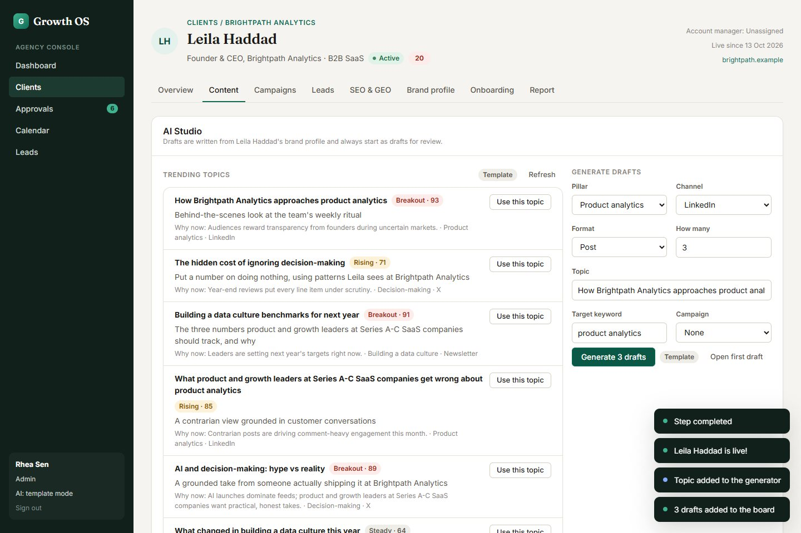
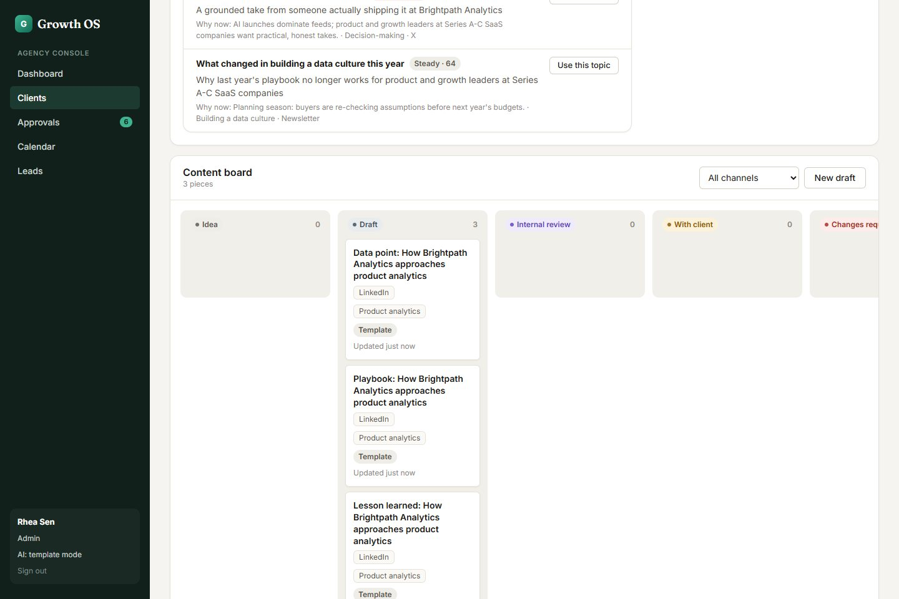
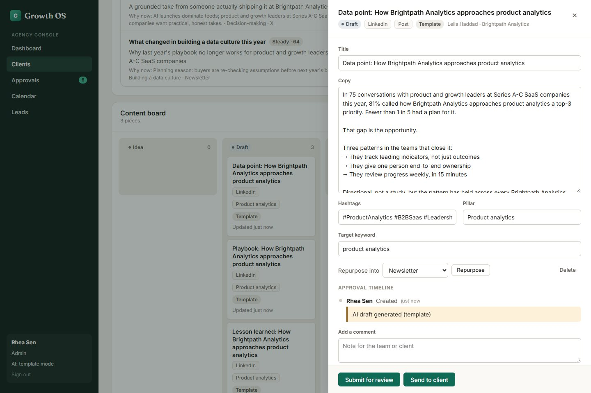

AI drafts in the founder's voice
09
AI Studio suggests timely topics with the client's angle and why it matters now. “Use this topic” fills the generator; one click writes three drafts. A badge shows whether text came from a live model or the built-in templates.

10
The content board by status, from idea to published. AI output always lands as a draft; nothing skips review.

11
The editor: edit copy, hashtags and keyword, and see the audit trail. Buttons show only the actions allowed for this status and role.
